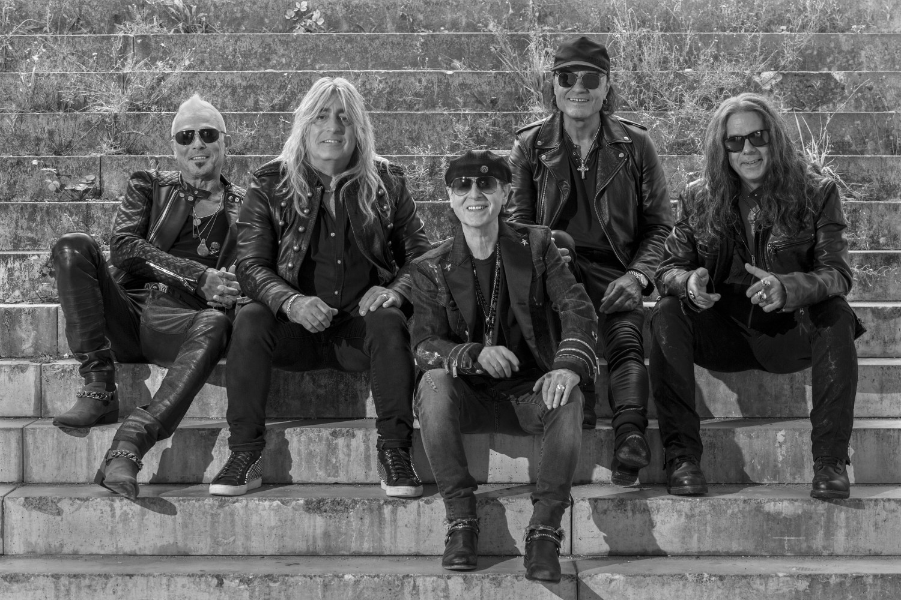

ΤΑ ΜΕΛΗ
ΤΑ ΜΕΛΗ
Λότταρ Χάιμπεργκ — (1965–1973)
Βόλφγκανγκ Ντζιόνυ — (1965–1973)
Καρλ-Χάιντς Φόλμερ –(1965–1970)
Μίχαελ Σένκερ — (1970–1973, 1978–1979)
Φράνσις Μπούχολτς — (1973–1983, 1984–1992)
Ούλι Γιον Ροτ — (1973–1978)

Γιούργκεν Ρόζενταλ — (1973–1975)
Άχιμ Κίρσνινγκ — (1973–1974)
Ρούντυ Λέννερς — (1975–1977)
Τζο Ουάιμαν - (1977)
Χέρμαν Ράρεμπελ — (1977–1983, 1984–1995)
Ραλφ Ρίκερμαν — (1993–2000, 2000–2003)
Κουρτ Κρες —(1996)
Κεν Τέυλορ — (2000)
Ίνγκο Πόβιτσερ — (2004)
Τζέιμς Κόττακ - (1996-2016)